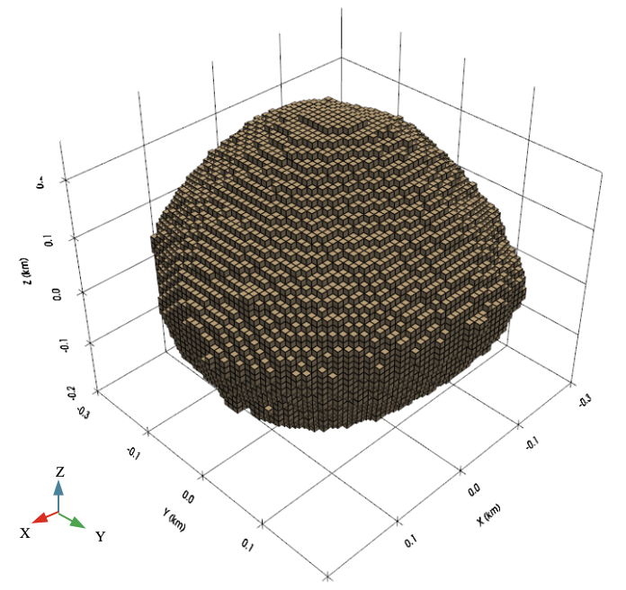

Mineral Extraction Scenarios From an Asteroid via Optimization Considering Rotational Dynamics
The study develops a cube-based model of asteroid Bennu and uses Euler rotational dynamics with particle swarm optimization to identify extraction sequences that minimize changes in angular velocity. Random and optimized strategies are compared for 30% and 70% material-removal scenarios.
View on IEEE Xplore ↗
DOI: 10.1109/ACCESS.2025.3615449
